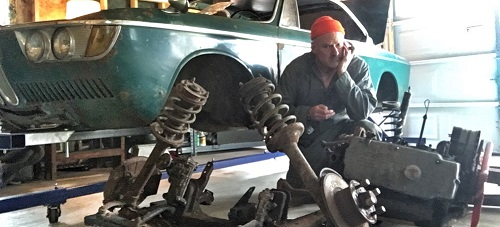
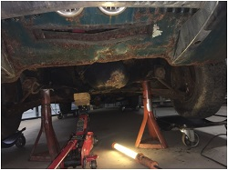
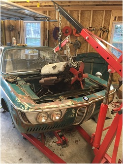
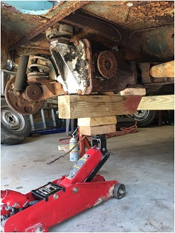
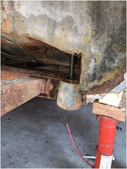
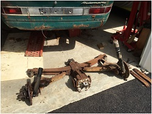
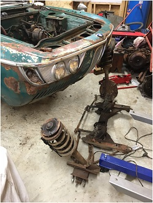

March 2016 – Pulling the Engine & Dropping the Sub Frames Suspension
click images to enlarge
Removing the engine is pretty strait forward on a 1966 year model car. It is simple. Not a lot of stuff. First thing is drain any oil and tranny fluid. Then remove the carb and intake manifold. The radiator was already missing from the car and so hose connections and the radiator are not an issue. I removed the starter motor and unbolted the automatic transmission from the engine which involved standard series of bolts in the bell housing. The nuts for the exhaust down pipe from the cast header are so corroded, I opt to use a cut off tool to cut the rusted exhaust pipe in that area. The engine hoist is hooked up at the forward pulling point and the eyelet at the start motor mount point on the block.
It is possible to actually lift the body off of the engine and subframe. You do need a few guys to do that. I always choose to pull the engine out from above without the transmission because I am usually a solo act. The automatic transmission proves to be very difficult to pull out by itself. There would be no way to pull both out together.

{kind=link}
The engine hoist is in place and attached to the engine. First order of business when removing the engine is to remove connection to engine mounts. The most secure points on the car for the jack stands is the subframe itself. One of my early concerns is not knowing how solid the frame rail are and can they be relied on to support the car's weight. I would find out later the frame rail were very solid.
Engine rises

{kind=link}
Rear Sub Frame and Suspension
E9s and e120s (same from A-pillar back) pose challenges for finding support points in the rear. I elevate the car and support the car with jack stands using the rear subframe. But what do you do when there is no sub frame? The only place to support the car when removing the subframe is to lower to a second set of jack stands on the rocker panel jack points (those half moons welded on the rockers for the roadside crank jack). With a rusty car, it can be dicey if the rockers are rusted out. For a back up emergency support I use a second set of jack stands and long 4 x 4 just kissing the rocker bottoms (just in case the jack points collapse). Always be careful not to allow the car's body weight to compress on the rocker drain ports. Luckily the rockers and jack points are pretty solid. Finally I support the differential with a jack. Removing the rear subframe requires unbolting the shocks from inside the trunk at the shock towers, unbolting the main support points visible from the front of the wheel wells, and finally at the transmission itself. Make sure the drive shaft is free of the differential.
The subframe's strongest support points are the two heavy threaded shafts that descend from the reinforced unibody. This is another place to inspect when buying an e9/e120. If the body is seriously rusted at these points, the car is seriously compromised. Luckily I am in good shape with solid points. This is also the points where the rotisserie will bolt to the car.
With all bolts out at the critical points, and spring clamps compressing the rear springs slightly, the subframe lowered due to its own weight using the heavy jack at the differential. One slight surprise is one of the rear shocks exploded spewing fluid all over. Other than that, it was pretty strait forward.
 |
 |
 |
{kind=link}
{kind=link}
{kind=link}
Front Sub Frame

{kind=link}
2000c Body on Jack Stands
{kind=link}